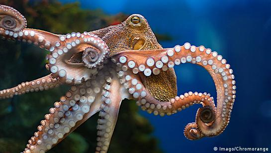

Los pulpos son criaturas marinas extraordinarias que habitan en las profundidades del océano. Su cuerpo blando y flexible, sus ocho brazos con ventosas y su capacidad para cambiar de color y textura los hacen únicos. Son considerados los más inteligentes de todos los invertebrados y su comportamiento complejo sigue siendo un enigma para los científicos
Anatomía y Adaptaciones: Cuerpo Blando: Los pulpos carecen de esqueleto interno y tienen un cuerpo blando y flexible. Brazos: Poseen ocho brazos con ventosas, que utilizan para atrapar presas y manipular objetos. Cromatoforos: Tienen células especializadas llamadas cromatoforos, que les permiten cambiar de color y textura para camuflarse y comunicarse. Tinta: Cuando se sienten amenazados, liberan una nube de tinta para confundir a los depredadores. Inteligencia y Comportamiento: Los pulpos son considerados los más inteligentes de todos los invertebrados. Son capaces de resolver problemas, aprender y recordar. Su comportamiento es complejo y diverso, desde la construcción de refugios hasta la caza activa de presas. Alimentación: Son carnívoros y se alimentan principalmente de crustáceos, peces y moluscos. Utilizan sus brazos para atrapar y desgarrar a sus presas. Reproducción: Los pulpos tienen una vida relativamente corta, de 1 a 2 años. Después de la cópula, la hembra deposita huevos en una cueva o refugio y los cuida hasta que eclosionan.
